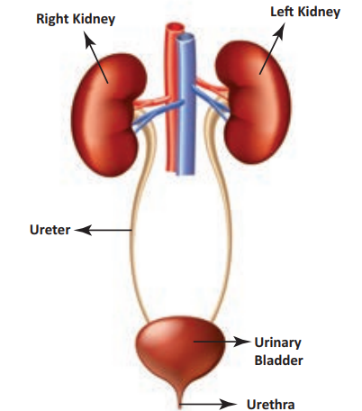

The excretory system removes waste products from the body. It also regulates water and electrolyte balance. The main organs involved are the kidneys, ureters, and urinary bladder.

LEARN BY GUESSING!!
Any Guess? What is the primary function of the kidneys?